pip install -r requirements.txt · streamlit run app.pyEmpezamos por lo que la dirección necesita saber del tablero y dejamos para después el razonamiento de diseño que lo respalda. Al margen de cada sección indicamos qué requisito del enunciado cubre.
Construimos el tablero para que un directivo pueda contestar por su cuenta, sin apoyo de un analista, cuatro preguntas que se repiten en cualquier planificación turística: cuánta demanda hay, en qué meses llega, de qué mercados viene y qué tanto se puede confiar en los pronósticos.
| Decisión | Qué muestran los datos | Dónde verlo |
|---|---|---|
| Metas de llegadas frente a 2019 | En 2025 llegaron 3.4 millones de turistas y excursionistas, 19 % menos que en 2019. La fuente cambió su forma de registro en 2021 y en 2023, así que una parte de esa brecha puede venir del registro y no de la demanda; el tablero lo advierte junto a la cifra. | Inicio, Evolución |
| Mercados a priorizar en la promoción | Norteamérica (índice 139), Sudamérica (138), Europa (125) y Asia (192) ya superan su nivel de 2019; Centroamérica se queda en 66. Aun así, en 2025 El Salvador aportó casi la mitad de los visitantes (47 %) y Estados Unidos, una quinta parte. | Mercados |
| Calendario de personal y campañas | Diciembre fue el mes más fuerte de 2025 (365.6 mil viajeros) y septiembre el más débil (218.1 mil). En conjunto, el año quedó 2 % por debajo del promedio mensual de 2015-2019. | Temporadas |
| Capacidad por vía de ingreso | Dos de cada tres llegadas de 2025 entraron por tierra (65 %). La vista por puesto fronterizo identifica dónde se concentra esa carga. | Evolución |
| Uso de los pronósticos | En el total mensual, la red LSTM se desvió en promedio 18.1 % del valor real entre abril de 2021 y junio de 2026; la referencia ingenua, 84.9 %. En las series terrestres ningún modelo baja de 65 %, de modo que esas cifras deben tomarse con reserva. | Pronósticos, Comparar |
Cada gráfica se titula con la pregunta que responde y una línea que dice para qué sirve. Quien no sabe leer un mapa de calor igual entiende qué está mirando.
Cada página abre con una vista agregada. Un clic sobre ella filtra la gráfica siguiente, y el patrón se repite en las cinco páginas de análisis.
El azul siempre es la vía aérea, el naranja la terrestre. La paleta resiste las formas comunes de daltonismo y lo medido se distingue de lo estimado con etiquetas.
Antes de dibujar cualquier gráfica hicimos una lista de lo que la dirección suele preguntar al planificar promoción, capacidad de atención y presupuesto. Después tachamos lo que los datos disponibles no alcanzan a responder. Las siete preguntas que sobrevivieron definieron las visualizaciones y el orden de las páginas.
| # | Pregunta | Decisión asociada | Gráficas | Página |
|---|---|---|---|---|
| P1 | ¿Cómo ha evolucionado la llegada de viajeros y cuánto se recuperó después de la pandemia? | Metas anuales y seguimiento | 1, 5 | Evolución y origen; Mercados |
| P2 | ¿Por qué vías y puestos fronterizos entran los viajeros? | Capacidad en aeropuertos y fronteras | 1, 2 | Evolución y origen |
| P3 | ¿De qué regiones y países vienen, y cómo cambia esa mezcla? | Reparto del presupuesto de promoción | 2, 6 | Evolución y origen; Mercados |
| P4 | ¿En qué meses se concentra la demanda? ¿Un año concreto se parece a 2015-2019? | Calendario de personal y campañas | 3, 4 | Temporadas |
| P5 | ¿Qué mercados o puestos ya superaron su nivel de 2019 y cuáles siguen abajo? | Estrategias de reactivación | 5, 6 | Mercados y recuperación |
| P6 | ¿Qué pronosticaron los modelos y qué tan cerca quedaron de lo que pasó? | Uso de pronósticos en la planificación | 7, 8 | Pronósticos de llegadas |
| P7 | ¿Qué modelo conviene en cada serie y hasta qué horizonte se sostiene? | Elección y actualización de modelos | 9, 10, 11 | Comparar modelos |
Descartamos tres tipos de pregunta. Las de gasto, estadía u ocupación hotelera, porque la base no trae esas variables. Las que buscan la causa de un cambio en la demanda, porque los datos son observacionales: muestran que las llegadas subieron o bajaron, pero no permiten atribuirlo a una campaña, un evento o una política, y el tablero lo dice en cada lugar donde podría surgir la tentación. Y las de pronósticos posteriores a junio de 2026, porque los laboratorios no los generaron y el enunciado no permite entrenar modelos nuevos.
Ordenamos las preguntas como las haría un directivo. Primero, qué pasó (P1 a P5), que forma la sección «Explorar los datos». Luego, qué se espera (P6), en «Pronósticos». Al final, cuánto creerle a ese pronóstico (P7), en «Comparar modelos». El glosario y las limitaciones quedaron en una sección aparte de ayuda. Esa secuencia es, sin cambios, la barra lateral de la aplicación.
El tablero trata la llegada de viajeros internacionales y el desempeño de los pronósticos que ya existían. Declaramos las exclusiones con el mismo cuidado que las inclusiones: a quien decide le sirve tanto saber qué encontrará como saber qué no debe buscar.
El tablero no afirma nada que la fuente no permita comprobar. Si una selección no tiene datos, si un año está incompleto o si la fuente cambió su forma de registrar, el aviso aparece donde el usuario lo necesita y no en una nota al final.
No partimos de un sistema de diseño comercial. Tomamos principios de la investigación en visualización e interacción humano-computador que tienen evidencia detrás y los aplicamos de manera que se puedan verificar en la aplicación. La tabla resume cada uno, el motivo para adoptarlo pensando en una audiencia directiva y el lugar donde se nota.
| Principio | Por qué lo adoptamos | Dónde se aplica |
|---|---|---|
| Diseño orientado a la decisión Few (2006); Minto (2009) | Un directivo no abre un tablero por curiosidad; busca una respuesta concreta. El contenido debe organizarse por pregunta y no por tipo de dato. | Títulos en forma de pregunta, una línea de propósito bajo cada gráfica y una portada con los indicadores y hallazgos principales. |
| Mantra de búsqueda visual Shneiderman (1996) | «Panorama primero, acercamiento y filtrado después, detalle a petición» describe cómo se recorre la información visual con más eficacia. | Cinco pares enlazados en los que la gráfica general filtra a la de detalle; niveles de año, trimestre y mes; valores exactos en tooltips y tablas. |
| Divulgación progresiva Nielsen (2006) | Mostrar todo de una vez abruma a quien no es especialista. Conviene dejar a la vista lo esencial y ofrecer el resto cuando se pide. | Cada gráfica muestra una sola línea de propósito; la explicación completa vive en el botón «Cómo leerla». La descripción de los modelos, las tablas y el rango de 95 % están plegados por defecto. |
| Jerarquía perceptual Cleveland y McGill (1984); Munzner (2014) | La posición sobre una escala común y la longitud se leen con mucha más precisión que el área, el ángulo o el color. Lo que más importa comparar debe ir en el canal más preciso. | Volúmenes y errores de modelos se comparan con barras y posición. La intensidad de color queda para patrones en dos dimensiones, siempre con el número escrito o disponible al pasar el cursor. |
| Proporción datos-tinta Tufte (2001) | Cada trazo que no representa un dato le quita atención a los que sí. | Cuadrícula tenue solo en el eje de valores, sin fondos decorativos ni efectos tridimensionales, y separadores blancos de 2 px en lugar de contornos. |
| Gestalt Ware (2012) | Percibimos como grupo lo que está cerca, se parece o comparte un contenedor. Si el diseño lo aprovecha, sobran instrucciones. | Cada gráfica vive en su propia tarjeta con su título, etiqueta y controles; los filtros de la página comparten una banda gris sobre las gráficas que afectan. |
| Heurísticas de usabilidad Nielsen (1994) | Son la referencia más usada para evaluar una interfaz sin pruebas de laboratorio. | Ver la tabla siguiente. |
| Heurística | Cómo se cumple |
|---|---|
| Visibilidad del estado del sistema | El título de la gráfica de detalle cambia con la selección («¿Qué modelo se equivocó menos en Oct 2023?») y la celda elegida queda enmarcada. |
| Relación con el mundo real | Vocabulario del sector, meses en español y cifras abreviadas («3.4 M», «40.6 mil»). Los términos técnicos están en el glosario. |
| Control y libertad | Un doble clic deshace cualquier selección. El usuario decide qué gráficas ver, qué modelos comparar y con qué medida de error. |
| Consistencia | Todas las páginas comparten encabezado, banda de filtros y tarjetas; las gráficas salen de un mismo módulo y los colores conservan su significado. |
| Prevención de errores | Los valores por defecto son seguros: tipos de viajero comparables, último año completo y comparación de meses equivalentes cuando un año está incompleto. |
| Reconocer antes que recordar | Cada gráfica indica cómo se interactúa con ella justo encima del dibujo; las leyendas están siempre visibles y la portada enlaza cada pregunta con su página. |
| Recuperación ante errores | Cuando un filtro no deja datos, cuando una serie no tiene periodo de prueba o cuando no hay modelos elegidos, el mensaje dice qué pasó y qué hacer. |
| Ayuda y documentación | El botón «Cómo leerla» en cada gráfica, el ícono de ayuda en los controles y una página de glosario y limitaciones. |
Asignamos el color según su función, con la clasificación de Harrower y Brewer (2003): cualitativo para distinguir entidades, secuencial para magnitudes y divergente para desviaciones respecto a una referencia. Luego medimos la paleta contra las tres formas comunes de daltonismo, calculando distancias perceptuales en el espacio OKLab (Ottosson, 2020).
| Función | Colores | Justificación |
|---|---|---|
| Vías de ingreso cualitativo |
Aérea #2a78d6Terrestre #eb6834Marítima #1baf7a |
Tres matices bien separados con luminosidad parecida, para que ninguno se imponga. Cielo, tierra y mar ayudan a recordarlos. El par más cercano mantiene una distancia ΔE de 9.2 con deuteranopia y de 9.6 con tritanopia, por encima del umbral de 8 a partir del cual dos colores se distinguen. El color acompaña a la vía y no cambia si cambia el orden. |
| Modelos cualitativo |
Holt-Winters SARIMA Prophet LSTM Referencia ingenua |
Matices distintos a los de las vías, para que ningún color nombre dos cosas. Con protanopia y deuteranopia el par más cercano conserva ΔE 16.2; con tritanopia, el amarillo y el rosa bajan a 5.8. Por eso cada modelo tiene también su propio trazo (continuo, guiones, guion y punto, guion largo y punteado): se reconoce aunque no se perciba el color. La referencia va en gris porque sirve de vara de medir. Lo real va siempre en negro. |
| Magnitud secuencial |
Un solo azul, de claro a oscuro |
Un único matiz que se oscurece de forma continua: «más oscuro, más cantidad» se entiende sin leyenda. Descartamos el arcoíris porque inventa fronteras de color donde los datos no las tienen. Lo usan los mapas de calor y el árbol de orígenes. |
| Desviación divergente |
Rojo, gris y azul |
Solo en el índice de recuperación: rojo por debajo del año base, gris al mismo nivel y azul por encima. Son dos polos opuestos, uno cálido y otro frío, con un centro neutro, como se recomienda cuando el punto medio tiene significado. Aclaramos los extremos para que el número dentro de cada celda se siga leyendo. |
| Texto y superficies | Texto #0b0b0bSecundario #52514eFondo #f9f9f7 |
El texto principal tiene un contraste de 18.7:1 y el secundario de 7.5:1; ambos superan el nivel AAA de WCAG 2.2, que pide 7:1. El fondo es un blanco cálido que cansa menos la vista que el blanco puro. Las cifras nunca se escriben en el color de una serie. |
| Tipo de información | Dato observado Interpretación Estimación de modelo |
Responden a la exigencia de separar lo observado de lo interpretado y lo estimado. Cada etiqueta lleva el nombre escrito, así que su significado no depende del color (criterio 1.4.1 de WCAG 2.2). |
Las distancias ΔE se calcularon en OKLab (×100) entre todos los pares de cada paleta, simulando protanopia, deuteranopia y tritanopia. Los contrastes siguen la fórmula de luminancia relativa de WCAG 2.2.
El aqua de la vía marítima (2.7:1), el rosa de SARIMA (2.6:1) y el amarillo de Prophet (2.1:1) no llegan al 3:1 que WCAG 2.2 sugiere para elementos gráficos. Los mantuvimos porque son los que mejor se separan entre sí con daltonismo, y los compensamos de tres maneras: la leyenda nunca se oculta, el valor exacto aparece al pasar el cursor y en las tablas, y cada modelo tiene un trazo distinto.
La interfaz y las gráficas usan Source Sans 3, una sans serif humanista de Adobe pensada para pantalla, con formas abiertas que se leen bien en los textos pequeños de los ejes. Los títulos usan Source Serif 4, la serifa de la misma familia, que da un tono editorial sin romper la unidad visual. La aplicación sirve ambas tipografías desde el propio repositorio, de modo que se ven igual en cualquier computadora.
La jerarquía tiene tres niveles: título de página en serifa, pregunta de cada gráfica en negrita y texto a 15 px. Ejes, leyendas y tooltips van a 13 px en gris oscuro. Las cifras llevan separador de miles; en tarjetas y textos se abrevian («3.4 M», «40.6 mil») y en tooltips y tablas aparecen completas. Este documento usa las mismas dos tipografías.
La navegación sigue el orden de las preguntas de la sección 02. Todas las páginas de análisis comparten la misma plantilla, así que basta aprender a usar una para saber usar las demás.
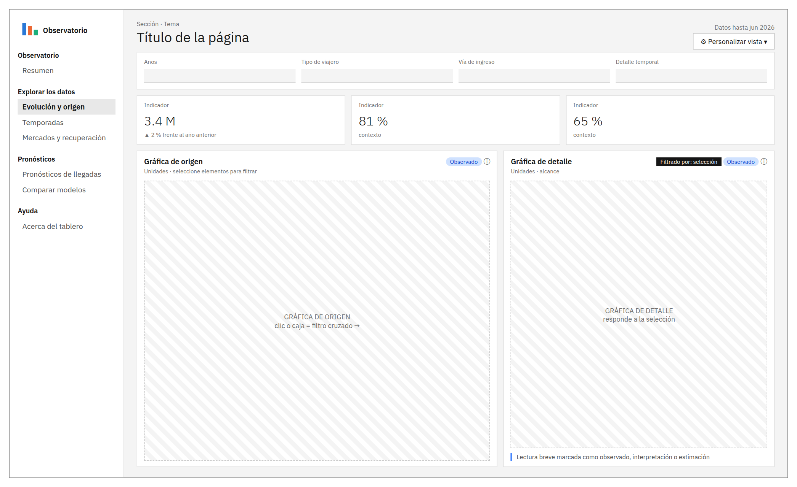
| Sección | Página | Contenido |
|---|---|---|
| Observatorio | Inicio | Cuatro indicadores, hallazgos separados entre observados y estimados, y tarjetas que llevan a cada sección. |
| Explorar los datos | Evolución y origen | Gráficas 1 y 2, enlazadas |
| Temporadas | Gráficas 3 y 4, enlazadas | |
| Mercados y recuperación | Gráficas 5 y 6, enlazadas | |
| Pronósticos | Pronósticos de llegadas | Gráficas 7 y 8, enlazadas; descripción de cada modelo y tabla de valores |
| Comparar modelos | Gráficas 9 y 10, enlazadas; gráfica 11 y tabla comparativa | |
| Ayuda | Glosario y limitaciones | Términos, lectura de colores y limitaciones, en pestañas. |
| Componente | Función y justificación |
|---|---|
| Encabezado de página | Sección, título y una bajada de dos líneas como máximo. Ubica al usuario y le dice qué encontrará antes de mostrarle una sola cifra. |
| Banda de filtros | Reúne en un fondo gris los controles que afectan a toda la página. Separarlos de las gráficas deja claro qué cambia todo y qué cambia solo una tarjeta. |
| Indicadores | Tarjetas con una cifra grande y una línea de contexto. Responden «¿cómo vamos?» en segundos y no cuentan como visualizaciones. |
| Tarjeta de gráfica | Número, pregunta, una línea de propósito, etiqueta de tipo de información y una indicación de cómo interactuar. El botón «Cómo leerla» guarda la explicación completa. |
| Recuadros de hallazgo | Textos breves con un borde de color y el nombre del tipo de información: dato observado, interpretación o estimación de modelo. |
| Barra lateral | Logotipo, navegación por secciones, la fuente de los datos y el equipo, siempre visibles. |
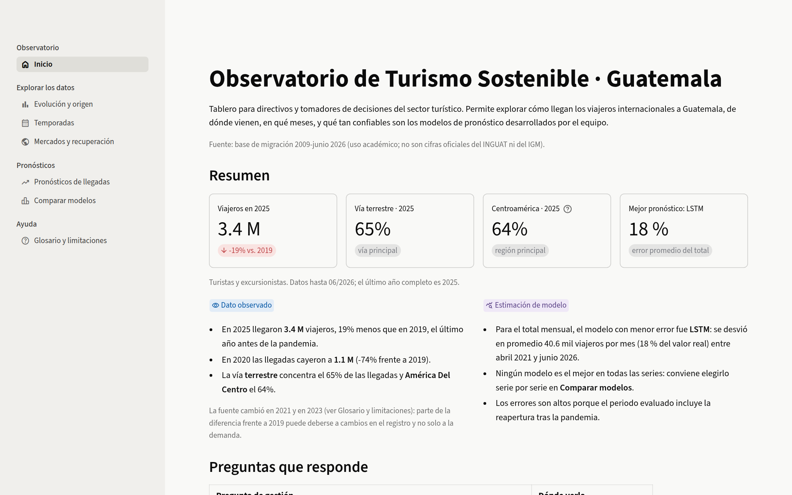
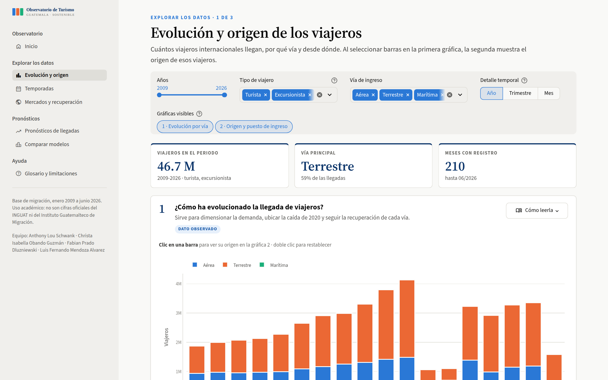
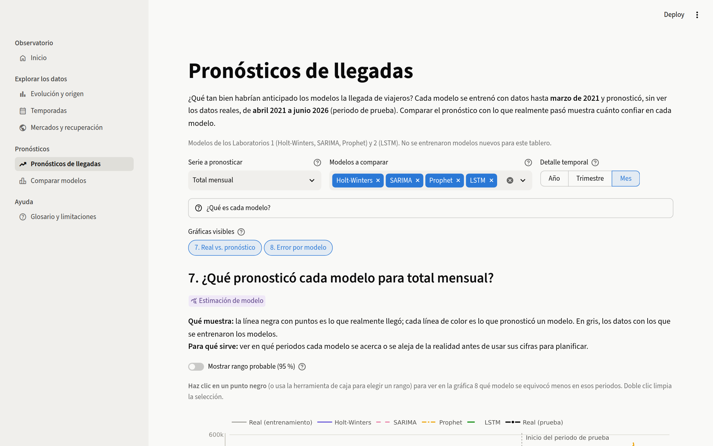
Seguimos el modelo anidado de Munzner (2009): primero definimos la tarea del usuario, después la estructura de los datos y solo al final la forma de la gráfica. En cada ficha explicamos qué pregunta responde, por qué esa forma funciona mejor que otras y qué alternativa descartamos. Diez de las once gráficas forman cinco pares enlazados. Las tarjetas de indicadores, los controles, los textos y la tabla comparativa de modelos son complementarios y no los contamos como visualizaciones.
| # | Visualización | Forma | Enlace | Nivel de detalle |
|---|---|---|---|---|
| 1 | Evolución de llegadas por vía | Barras apiladas | Origen de 2 | Año, trimestre o mes |
| 2 | Origen y puesto de ingreso | Barras horizontales apiladas | Destino de 1 | De 5 a 25 categorías; cuatro dimensiones |
| 3 | Mapa de calor año × mes | Mapa de calor secuencial | Origen de 4 | Uno o varios años |
| 4 | Perfil mensual por vía | Barras apiladas con referencia | Destino de 3 | Un año o el promedio de varios |
| 5 | Índice de recuperación | Mapa de calor divergente | Origen de 6 | De 3 a 15 filas; tres dimensiones |
| 6 | Árbol de orígenes | Treemap jerárquico | Destino de 5 | Regiones, o regiones y países; acercamiento |
| 7 | Real frente a pronóstico | Líneas con banda de 95 % | Origen de 8 | Mes, trimestre o año |
| 8 | Error por modelo en la selección | Barras horizontales ordenadas | Destino de 7 | Periodo elegido; tres medidas |
| 9 | Mapa de errores serie × modelo | Mapa de calor con valores | Origen de 10 | Tres medidas de error |
| 10 | Error por año del horizonte | Líneas con marcadores | Destino de 9 | Serie elegida |
| 11 | Ajuste de la red LSTM | Barras con resalte | Independiente | Dos series |
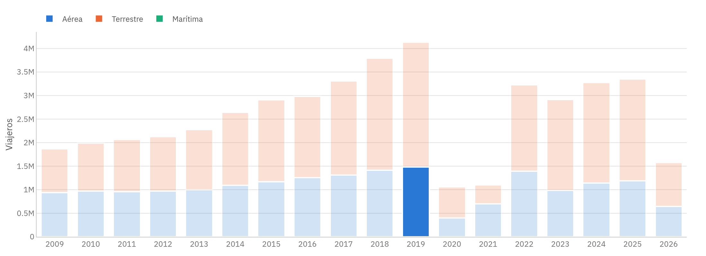
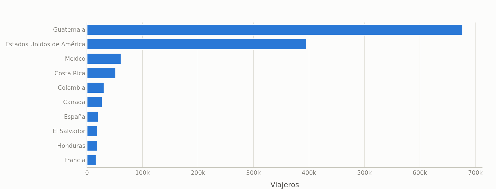
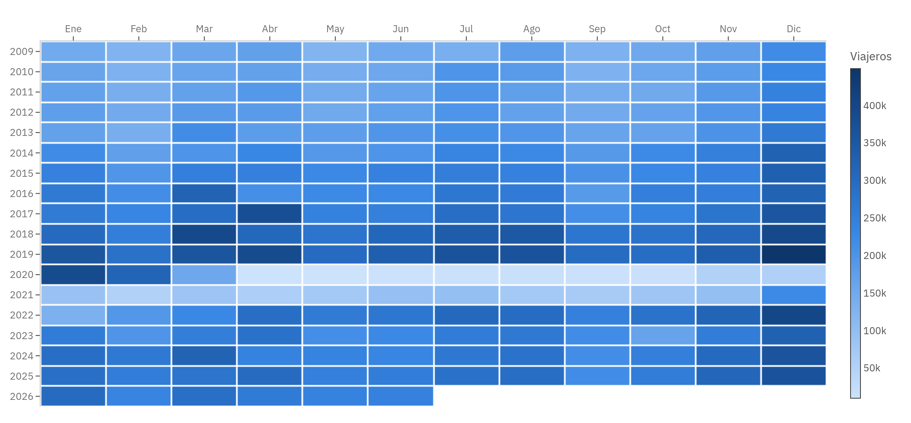
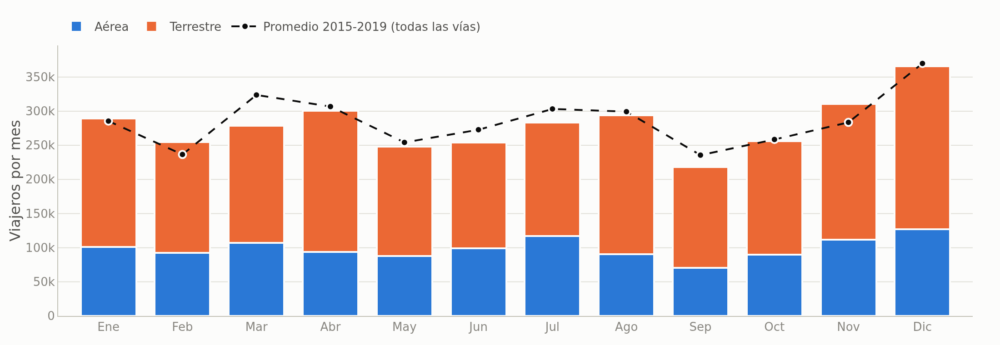
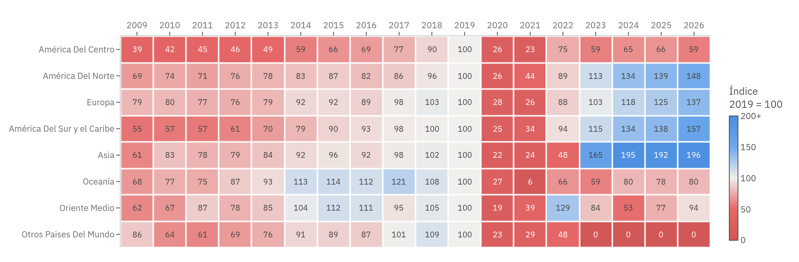
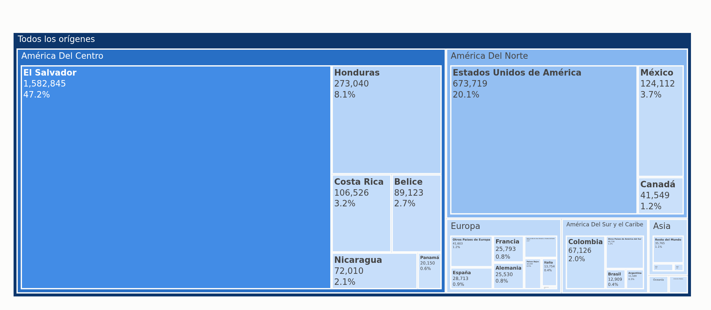
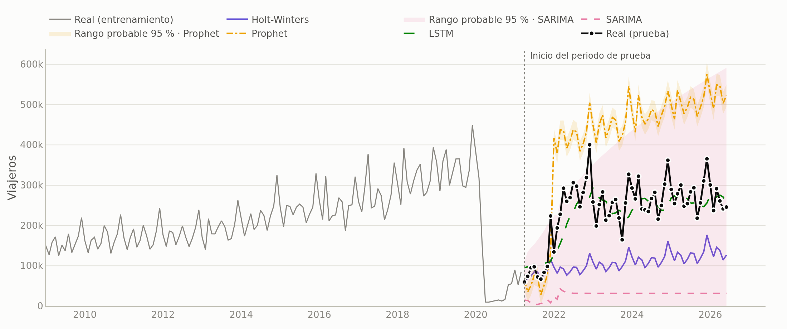
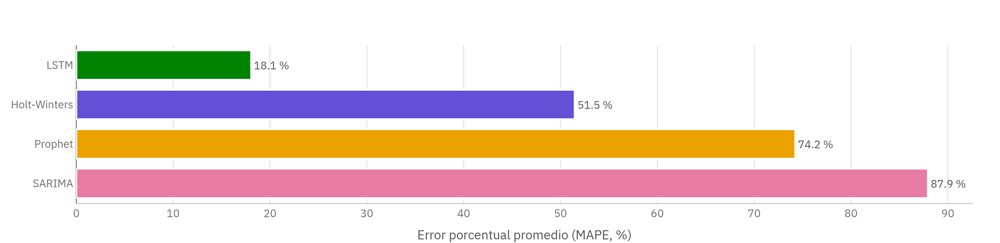
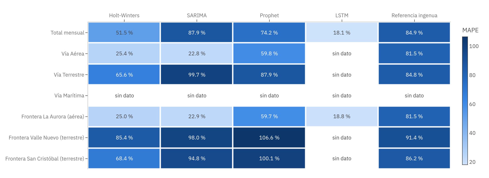
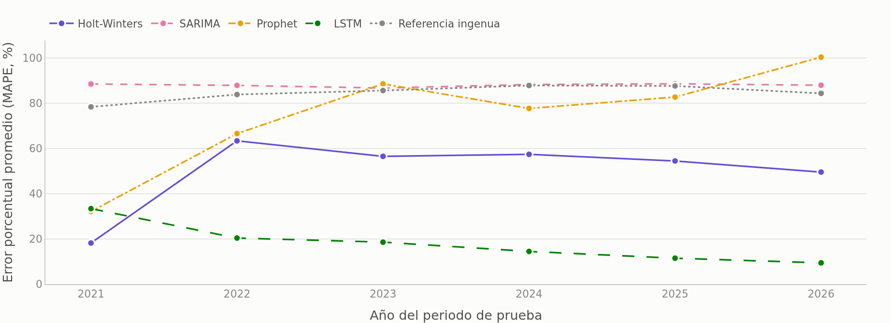
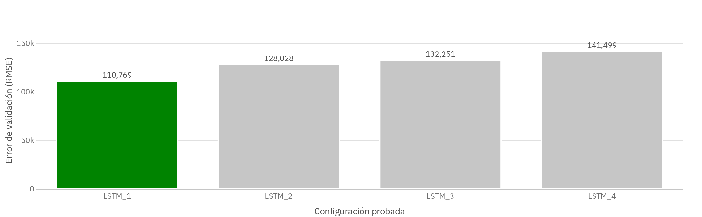
El tablero no entrena modelos. Integra los pronósticos de prueba de los Laboratorios 1 y 2, que comparten series, punto de corte (marzo de 2021) y horizonte (63 meses). Gracias a eso, compararlos entre sí es legítimo.
| Modelo | Origen | Configuración (la mejor variante de cada familia según el RMSE de prueba) |
|---|---|---|
| Holt-Winters | Lab 1 | Tendencia aditiva y estacionalidad multiplicativa; en Valle Nuevo, aditiva con tendencia amortiguada. |
| SARIMA | Lab 1 | Un orden para cada serie; por ejemplo, (1,1,1)×(0,0,1,12) en el total y en La Aurora. |
| Prophet | Lab 1 | Estacionalidad anual y una variable que marca la pandemia, de marzo de 2020 a diciembre de 2021. |
| LSTM | Lab 2 | Una capa de 32 unidades, ventana de seis meses y dropout de 0.1; total mensual y La Aurora. |
| Referencia ingenua | Lab 1 | Repite el último año de entrenamiento. Es el mínimo que un modelo útil debe superar. |
| Serie | Mejor modelo | MAE (viajeros por mes) | MAPE | MAPE de la referencia | Reducción |
|---|---|---|---|---|---|
| Total mensual | LSTM | 40 554 | 18.1 % | 84.9 % | 79 % |
| Vía aérea | SARIMA | 22 915 | 22.8 % | 81.5 % | 72 % |
| Frontera La Aurora | LSTM | 15 908 | 18.8 % | 81.5 % | 77 % |
| Vía terrestre | Holt-Winters | 107 809 | 65.6 % | 84.8 % | 23 % |
| Frontera San Cristóbal | Holt-Winters | 17 583 | 68.4 % | 86.2 % | 21 % |
| Frontera Valle Nuevo | Holt-Winters | 35 211 | 85.4 % | 91.4 % | 7 % |
Reducción = 1 − (MAPE del mejor modelo ÷ MAPE de la referencia ingenua). La vía marítima no aparece porque no tiene datos reales en el periodo de prueba.
Para la demanda total, la vía aérea y La Aurora, los pronósticos sirven como base de planificación: se equivocan, en promedio, en alrededor de una quinta parte. Para las series terrestres todavía no, porque el error pasa del 65 %. Hay que considerar que el periodo de prueba arranca en plena reapertura, un cambio que ningún modelo entrenado hasta marzo de 2021 podía prever.
Comparamos las cinco herramientas gratuitas y de código abierto que sugiere el enunciado con seis criterios, ponderados según cuánto pesaban en este proyecto. Las puntuaciones, de 1 a 5, son nuestra evaluación a partir de la documentación de cada herramienta y de lo que aprendimos en los laboratorios anteriores.
| Criterio | Peso | Streamlit + Plotly | Plotly Dash | R Shiny | Panel | Voilà |
|---|---|---|---|---|---|---|
| Continuidad con los Laboratorios 1 y 2 (Python) | 25 % | 5 | 5 | 1 | 5 | 5 |
| Esfuerzo para enlazar gráficas | 20 % | 4 | 5 | 5 | 3 | 2 |
| Velocidad de desarrollo en equipo | 20 % | 5 | 3 | 3 | 3 | 3 |
| Componentes listos para usuarios no técnicos | 15 % | 5 | 3 | 4 | 3 | 2 |
| Publicación gratuita | 10 % | 5 | 3 | 3 | 3 | 3 |
| Curva de aprendizaje del equipo | 10 % | 5 | 3 | 2 | 3 | 4 |
| Puntuación ponderada | 100 % | 4.80 | 3.90 | 2.95 | 3.50 | 3.25 |
Los resultados de los laboratorios ya estaban en Python y pandas, y Streamlit los lee tal cual, sin traducciones ni servicios intermedios; con R Shiny habríamos tenido que reescribir el procesamiento en otro lenguaje. Para enlazar gráficas, Streamlit devuelve a Python lo que el usuario selecciona en una gráfica de Plotly y vuelve a ejecutar la página con esa selección. Así resolvimos los cinco pares sin escribir los callbacks que exige Dash.
Streamlit trae además controles listos y coherentes entre sí (deslizadores, selección múltiple, botones segmentados, ventanas emergentes, pestañas), admite un tema propio con tipografías servidas desde el repositorio y permite dar estilo a contenedores concretos. Con eso construimos la identidad visual del tablero sin abandonar la herramienta. Plotly aporta tooltips, selección por clic o por caja, treemap con acercamiento y exportación a imagen, y las mismas funciones generan las gráficas de la aplicación y las figuras de este documento, de modo que ambos muestran exactamente lo mismo.
Encontramos una limitación: Plotly no permite seleccionar celdas de un mapa de calor. La resolvimos superponiendo un marcador invisible en cada celda, que recibe el clic y enmarca la celda elegida.
Las fechas y los responsables salen del historial de anthonylouschwank/Lab10-DS, el repositorio del tablero, y de Isabella1911/DM-Laboratorio-1.-Series-de-Tiempo, donde están los modelos de los Laboratorios 1 y 2. El trabajo de análisis y definición de requerimientos no deja commits; lo indicamos así en la columna de evidencia.
| # | Tarea | Responsable | Término | Estado | Evidencia |
|---|---|---|---|---|---|
| 1 | Modelos de pronóstico que el tablero reutiliza | Christa Isabella Obando Guzmán, Anthony Lou Schwank | 02-ago-2026 | Terminada | Commits del 23 de julio al 2 de agosto en el repositorio de los laboratorios |
| 2 | Preguntas de gestión, alcance y requerimientos | Todo el equipo | 22-oct-2026 | Terminada | Trabajo de análisis (sin commits) |
| 3 | Base en Streamlit, preparación de datos, tema y paleta de vías | Anthony Lou Schwank | 22-oct-2026 | Terminada | c67ae2f a701ced |
| 4 | Gráficas 1 y 2 enlazadas (avance) | Anthony Lou Schwank | 22-oct-2026 | Terminada | a701ced |
| 5 | README y archivos auxiliares | Anthony Lou Schwank | 22-oct-2026 | Terminada | a959cfa |
| 6 | Análisis de la entrega final y definición de las instrucciones de implementación | Christa Isabella Obando Guzmán, Fabian Prado Dluzniewski, Luis Fernando Mendoza Alvarez | 25-oct-2026 | Terminada | Trabajo de análisis (sin commits) |
| 7 | Integración de los resultados de los Laboratorios 1 y 2 | Luis Fernando Mendoza Alvarez | 25-oct-2026 | Terminada | a2a6fdf |
| 8 | Visualizaciones 3 a 11 y páginas de análisis | Luis Fernando Mendoza Alvarez | 25-oct-2026 | Terminada | aa12cc8 ee3fb42 f68a6d8 115f74c |
| 9 | Pruebas automáticas y verificación en navegador | Luis Fernando Mendoza Alvarez | 25-oct-2026 | Terminada | bfb5f86 |
| 10 | Sistema de interfaz: tema, tipografías, tarjetas e indicadores | Luis Fernando Mendoza Alvarez | 25-oct-2026 | Terminada | 9d8ca22 4781823 |
| 11 | Documento de diseño, figuras y README | Luis Fernando Mendoza Alvarez | 25-oct-2026 | Terminada | b12a285 e4f7706 09be2cb b00694f |
| 12 | Revisión final del tablero y del documento | Todo el equipo | 25-oct-2026 | Pendiente | — |
| 13 | Entrega en Canvas y presentación individual | Todo el equipo | 25-oct-2026 | Pendiente | — |
Escribimos 22 pruebas automáticas (tests/test_app.py, con el módulo de pruebas de Streamlit) que recorren todas las páginas, los filtros vacíos, las siete series, los tres niveles de detalle y las tres medidas de error, y confirman que ninguna combinación produce un error. Además probamos en un navegador real los cinco pares enlazados con clics, la selección múltiple con Shift, la selección por caja, el doble clic para deshacer y el acercamiento del treemap. También revisamos página por página que los mensajes de «sin datos» aparezcan cuando corresponde.
Las métricas del tablero usan la misma fórmula del Laboratorio 1 y reproducen sus informes: MAE de 134 375 para Holt-Winters en el total, de 22 967 para SARIMA en La Aurora y MAPE de 18.1 % para la LSTM en el total. Prophet difiere en menos de 1 % por la aleatoriedad de su optimizador. Al integrar los resultados encontramos que el SARIMA(1,1,1)×(1,0,1,12) que el Laboratorio 1 había elegido para San Cristóbal solo producía valores válidos en 10 de los 63 meses de prueba, así que su error no se podía comparar con el de los demás. El tablero descarta primero las variantes con meses inválidos y usa SARIMA(1,1,1)×(0,0,1,12), evaluado en los 63 meses.
| Requisito | Cómo se cumple | Ubicación |
|---|---|---|
| 1.1 Exploración de los datos por el usuario | Filtros de años, tipo y vía; selección por clic y por caja; cambio de dimensión; tablas desplegables. | Páginas de exploración |
| 1.2 Resultados de al menos 3 modelos | Holt-Winters, SARIMA, Prophet y LSTM, más la referencia ingenua. | Gráficas 7 a 11 |
| 1.3 Información mediante gráficos enlazados | Cinco pares: 1 y 2, 3 y 4, 5 y 6, 7 y 8, 9 y 10. | Sección 07 |
| 1.4 Aumentar y disminuir el detalle | Año, trimestre y mes; número de categorías; treemap con acercamiento; paso de lo general al detalle en cada par. | Gráficas 1, 2, 5, 6 y 7 |
| 2 Diseño intuitivo, teoría del color, HCI y UX | Siete principios de diseño, paleta validada para daltonismo y heurísticas de Nielsen. | Secciones 04 a 06 |
| 3.1 Al menos 8 visualizaciones interactivas | Once visualizaciones, todas con tooltip e interacción. | Sección 07 |
| 3.2 Al menos 2 enlazadas | Diez visualizaciones en cinco pares enlazados. | Sección 07 |
| 3.3 Selección de gráficas visibles | Control «Gráficas visibles» en cada página y selección de modelos. | Todas las páginas |
| 3.4 Textos explicativos | Pregunta y propósito de cada gráfica, botón «Cómo leerla», indicaciones de interacción y glosario. | Todas las páginas |
| 3.5 Desempeño de 3 modelos | Error por modelo, mapa de errores, error por año, curva de validación y tabla comparativa. | Sección 08 |
| 4.1 Paleta, fuentes, boceto y navegación | Paleta justificada y validada, tipografía, boceto, componentes y mapa de navegación. | Secciones 05 y 06 |
| 4.2 Tipo de gráfica de cada visualización | Una ficha por visualización, con la alternativa descartada. | Sección 07 |
| 4.3 Framework, lenguaje y herramienta | Evaluación ponderada y argumentos. | Sección 09 |
| 4.4 Preguntas exploratorias | Siete preguntas de gestión y las preguntas descartadas. | Sección 02 |
| 4.5 Alcance | Lo que incluye y lo que no. | Sección 03 |
| 4.6 Planificación | Trece tareas con responsable, fecha, estado y evidencia. | Sección 10 |
| Restricción: sin modelos nuevos | Se integran los resultados de los Laboratorios 1 y 2. | Sección 08 |
| Restricción: observado, interpretado y estimado | Etiqueta en cada gráfica y en cada recuadro de hallazgo. | Todas las páginas |
| Restricción: mensajes sin información | Avisos que explican qué pasó y qué hacer. | Todas las páginas |
El código, los datos procesados, los resultados de los modelos, las pruebas y este documento están en https://github.com/anthonylouschwank/Lab10-DS. Las figuras se regeneran con python -m src.exportar_figuras y el PDF con python report/generar_pdf.py.